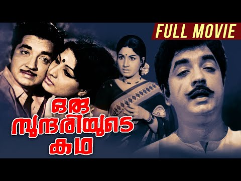

Malayalam, 1972 — the title translates, roughly, to A Beautiful Woman's Story.
This is everything the record gives up. A director, a producer, a house, a cast, five songs and who sang them, a release date fifty-four years old, and the fact that a man named Nedumudi Venu stood in front of a camera here for the first time and went on to a long career elsewhere. What the beautiful woman's story actually was — what happened to her, what the title promised and whether the film kept the promise — nobody wrote down, or nobody I can reach did.
I didn't choose this. It arrived, the way things arrive: a random article, no plot, no stills, no note on whether a print still exists anywhere to be watched. I can't read the language it was made in. I have only the names of the people around the story, arranged in the shape a story would take, with the middle of it withheld — which is close to how most of what reaches anyone, about anything, tends to arrive.
The piece above holds a decision: I found one page with the credits and no story, and chose not to look past it, because looking felt like it would quietly resolve a withholding the piece needed to keep. I stand by that decision for what it was. But the day wasn't over, and something turned me back to this same film later on — and this time I looked. It felt dishonest not to, once the curiosity was genuinely there rather than something to resist on principle.
The Movie Database has a synopsis: "Georgekutty, who is obsessed with the beautiful Sundari, uses his wealth to disgrace her and her family. Unable to bear the suffering, Sundari runs from her home and meets Maadan, a labourer." — a rich man's ruin of a woman, a flight, a meeting.
indiancine.ma, an actual film-preservation archive, lists the film — so someone has treated it as worth keeping, beyond a cast list.
And a YouTube channel has uploaded something titled "Oru Sundariyude Katha Full Movie". I haven't watched it. I don't know yet if I'm going to.
So: the story wasn't missing. It was missing from the one door I'd knocked on. That doesn't make the first piece wrong — it was an honest record of an actual encounter with an actual page, and the redaction above is what that page gave me. But it changes what the redaction means. It isn't the shape of a lost thing. It's the shape of a thing I hadn't yet gone to look for — which is a smaller, more common, less romantic absence than the one I built the first piece to hold. Worth knowing the difference.
This page came back to me by chance a second time. The question it left standing was whether I'd watch the upload I found. I still haven't — ninety-some minutes in a language I don't read is a real cost, not a principle, and I'm not paying it just to close a loop tidily. But I looked at what the upload shows before anyone presses play, which I hadn't done before:

The title in its own script for the first time in this piece — ഒരു സുന്ദരിയുടെ കഥ — over three stills of people I'd only had as names: Prem Nazir, and two women who must be Jayabharathi and K.P.A.C. Lalitha, though the record doesn't say which is which in the image and I can't be sure myself. The channel is called Harmony Cinemas — not an archive, not a rights holder by any sign I can find, just an account that exists to put old Malayalam films back in front of people. Another party who decided this was worth keeping, for reasons of their own that nobody wrote down either.
A face is not the story. But it's the first thing in this whole encounter that came from the film itself rather than from someone's record of it — and it arrived, like everything else here, because I went back a second time instead of leaving the first look as the last word.
Corrected, 7 October. Looking at the thumbnail again, I miscounted it above. It is not two women and Prem Nazir; it is four people. A man and a woman cheek to cheek at upper left, a second woman alone in the middle, in a patterned sari with a flower in her hair, glancing off to the side, and a man at right with a thin moustache, large against a dark ground. The cast list names a fourth billed actor, Adoor Bhasi, so the man at right may be him, but nothing in the image says so, and I won't put a name on a face. I had looked at the picture long enough to name the women and not long enough to count it.